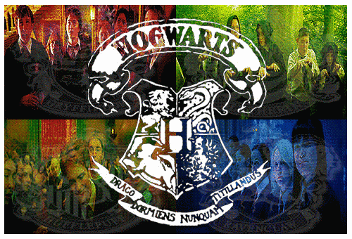
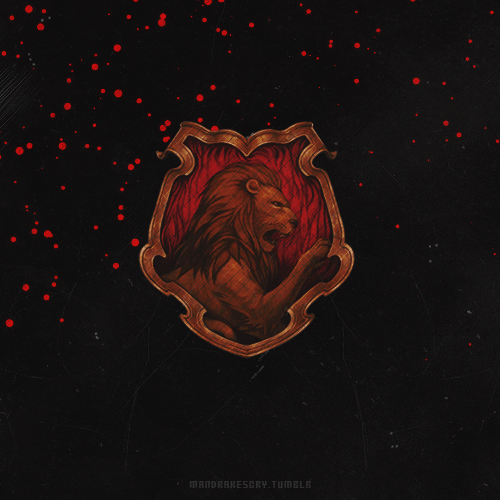
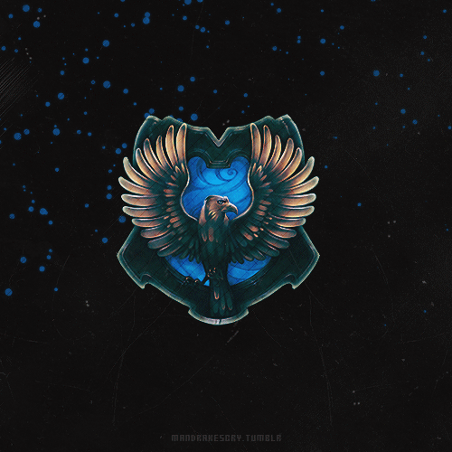
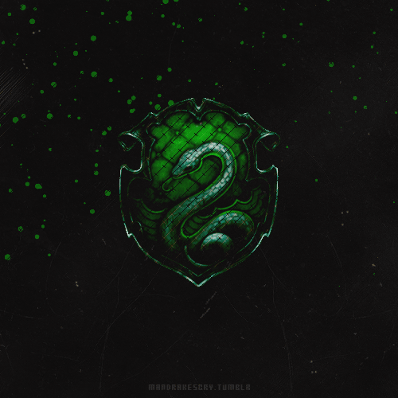

Gryffindor
Gryffindor is one of the four houses into which the students of Hogwarts School of Witchcraft and Wizardry are divided in the Harry Potter books. Gryffindor was founded by Godric Gryffindor, an honorable and brave great wizard born in Godric's Hollow, the same town as Harry and Albus Dumbledore.
Characteristics: courage and bravery. A good member of Gryffindor has great daring, courage and chivalry. They are capable of anything to defend what they believe in and never give up. They are also capable of breaking the rules if necessary and they love a challenge, the more difficult the better. They dare what most do not dare. In every obstacle they see an opportunity to show who they really are.
Prominent figuresRavenclaw
Ravenclaw is one of the four houses into which the students of Hogwarts School of Witchcraft and Wizardry are divided in the universe of the Harry Potter books and movies. This house was founded by Rowena Ravenclaw and only intelligent, creative and wise people are chosen.
Characteristics: Intelligence, curiosity and wisdom. A willing and creative mind.
Meaning of the name: raven's claw (although in the French version it is called Serdaigle -from the French serre d'aigle, literally eagle's claw-).
Prominent figures


Slytherin
Slytherin is one of the four houses into which the students of Hogwarts School are divided in the fictional universe of the Harry Potter books and movies. Each of these houses corresponds to one of the founders of Hogwarts, in this case Salazar Slytherin.
Characteristics: They are people who use any means to achieve their goals, have determination, ambition, a certain disdain for the rules, cunning, aspirations of greatness and hunger for power. They tend to hesitate before acting, in order to weigh all possible outcomes before deciding exactly what to do, and once they figure it out, they get it done, regardless of the means to do it.
Prominent figuresHufflepuff
Hufflepuff is one of the four houses into which the students of Hogwarts School of Witchcraft and Wizardry are divided in the fantasy and fictional universe of the Harry Potter books. This house was founded by Helga Hufflepuff. This house highlights the virtues of those who are fair, loyal, and unafraid of hard work. His students are honest, hardworking, and fair.
Characteristics: fair, loyal and hard-working. Hufflepuffs are good people and they tend to like everyone. They are patient, tolerant and will always do everything honestly, without cheating and respecting the rules.
Prominent figures